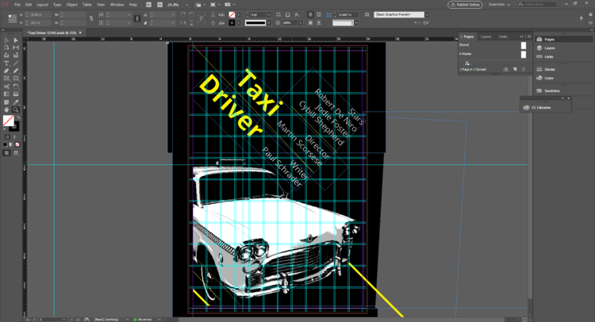

Project Analysis

Color Selection
In order to have a more business and serious looking magazine, I chose a darker color theme.
With the help of yellow and red to high light and give contrast to the overall design.
Font selection also follows the same principle, serif fonts like Trajan Pro 3 and Minion Pro gives it a serious look,
while sans-serif fonts like Ariel and Microsoft Sans-Serif gives the paragraphs a clean and increases the readability.
1 / 3

2 / 3

3 / 3

Image Selection
The magazine I created is monthly issued.
It talks about global issues around the world, so that is why I chose to talk about the massacre in Mexico.
I selected images that have a strong focus point inside.
The candle in the first and second image draws attention to the audience and gives a impact in the overall design.
